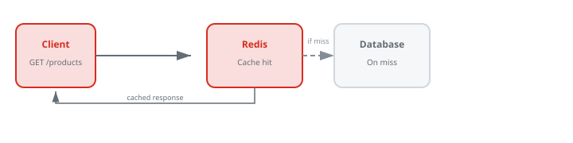

Redis & Caching: Speed Up Real-World Apps
Chapter 1
Introduction
Redis is an in-memory data store famous for caching, but it is also a powerful real-time database. In this tutorial you will learn how to speed up APIs, share user sessions, and throttle traffic with Redis.
Before you start
- Comfortable with Node.js and Express.
- Basic SQL knowledge for the database examples.
- Docker installed (optional but recommended).
What you'll learn
- ✓ Core Redis data structures
- ✓ Cache-aside and write-through patterns
- ✓ Session management with TTL
- ✓ Token-bucket rate limiting
- ✓ Eviction, expiration, and invalidation
- ✓ Capstone: caching an e-commerce API
More practice ideas
- Add a leaderboard for a multiplayer game using Sorted Sets.
- Cache GitHub repository metadata to avoid API rate limits.
- Build a real-time view counter using Redis HyperLogLog.
Chapter 2
Why Caching?
Most web apps spend the bulk of their time reading the same data over and over. Caching stores that data in fast memory so subsequent reads are nearly instant.
Request with and without cache

Latency
Redis reads take microseconds. Disk or network calls to a database take milliseconds.
Load
Offload the database for read-heavy workloads like product catalogs and news feeds.
Cost
Fewer database connections and cheaper queries mean a smaller production bill.
Chapter 3
Install & Run Redis
The easiest way to run Redis locally is Docker. You can also install Redis directly from redis.io or use a managed cloud service.
# Run Redis with Docker
docker run -d --name
redis -p 6379:6379
redis:latest
# Or with a volume for persistence
docker run -d --name
redis \
-p 6379:6379 \
-v redis_data:/data \
redis:latest
redis-server --appendonly yes
# Test it
redis-cli ping
# Expected response: PONG# Basic CLI commands
redis-cli SET name "Ada"
redis-cli GET name
redis-cli EXPIRE name 60
redis-cli TTL name
redis-cli DEL nameCheckpoint
Start Redis, run
PING
, then
SET hello world
and
GET hello
.
Chapter 4
Core Data Structures
Redis is more than a key-value store. Its specialized data structures solve specific problems efficiently.
# Strings: counters, flags, JSON blobs
SET user:42:profile '{"name":"Ada"}' EX 300
GET user:42:profile
INCR page:views:home
INCRBY stock:sku-123 -2# Hashes: compact object storage
HSET product:123 name "Laptop" price 999 stock 12
HGETALL product:123
HMGET product:123 name price# Lists: queues and timelines
LPUSH recent:views sku-123
LTRIM recent:views 0 9
LRANGE recent:views 0 5# Sets: unique collections
SADD ip:blocked 10.0.0.1
SISMEMBER ip:blocked 10.0.0.1
SMEMBERS ip:blocked# Sorted sets: leaderboards
ZADD leaderboard 1500 "alice"
ZINCRBY leaderboard 100 "alice"
ZREVRANGE leaderboard 0 2 WITHSCORES# TTL: automatic expiration SET temp:token abc123 EX 60 TTL temp:token
# Key disappears after 60 secondsWhich structure for which job?
- String — simple values, counters, serialized JSON.
- Hash — objects with many fields, e.g. a user profile.
- List — queues, activity streams, recent items.
- Set — tags, blocked IPs, unique visitors.
- Sorted Set — leaderboards, time-series windows, top-N.
Chapter 5
Caching Patterns
There are two common ways to keep a cache in sync with a database. Each has trade-offs in complexity and consistency.
Cache-aside (lazy loading)
The application checks the cache first. On a miss it loads from the database, then populates the cache.
async function getProduct(id) {
const key = `product:${id}`;
let data = await redis.get(key);
if (data) return JSON.parse(data);
data = await db.query("SELECT * FROM products WHERE id = $1", [id]);
if (data) {
await redis.setex(key, 300, JSON.stringify(data));
}
return data;
}Write-through
The application writes to both the cache and the database at the same time. Reads are always fast.
async function updateProduct(id, fields) {
const updated = await db.query(
"UPDATE products SET name = $1 WHERE id = $2 RETURNING *",
[fields.name, id],
);
await redis.setex(`product:${id}`, 300, JSON.stringify(updated));
return updated;
}Cache invalidation
- TTL : set an expiration so stale data disappears automatically.
- Write invalidation : delete the cached key when the source changes.
- Tag-based invalidation : track keys by tags and bulk-delete related entries.
Chapter 6
Redis from Node.js
The
ioredis
and
node-redis
clients both work well. We will use
ioredis
for its promise API and clustering support.
npm init -y
npm install
express ioredis pg
npm install --save-dev nodemonconst express = require("express");
const Redis = require("ioredis");
const app = express();
app.use(express.json());
const redis = new Redis({ host: "localhost", port: 6379 });
app.get("/hello", async (req, res) => {
const visits = await redis.incr("visits:hello");
res.json({ message: "Hello from Redis!", visits });
});
app.listen(3000, () => console.log("Server on http://localhost:3000"));Checkpoint
Create an Express app, connect Redis, and build an endpoint that increments a counter on every request.
Chapter 7
Session Store
Storing sessions in Redis is a classic use case. It scales horizontally because every app server reads from the same fast store, and sessions expire automatically.
npm install express-session connect-redisconst session = require('express-session');
const RedisStore = require('connect-redis')(session);
const Redis = require('ioredis');
const redisClient = new Redis({ host: 'localhost',
port: 6379 }
);
app.use(session({ store: new RedisStore({ client: redisClient }
),
secret: process.env.SESSION_SECRET || 'keyboard-cat',
resave: false,
saveUninitialized: false,
name: 'sid',
cookie: { secure: false, // set
true in production with HTTPS httpOnly: true,
maxAge: 1000 * 60 * 60 * 24 // 24
hours }
}));
app.post('/login',
async (req,
res) => { // Verify
user credentials here... req.session.userId = req.body.userId;
res.json({ ok: true }
);
}
);
app.get('/me', (req,
res) => { if (!req.session.userId) return res.status(401).json({ error: 'Unauthorized' }
);
res.json({ userId: req.session.userId }
);
}
);
app.post('/logout', (req,
res) => { req.session.destroy(() => res.json({ ok: true }
));
}
);Real-world considerations
- Rotate the session secret and store it in environment variables.
-
Use
httpOnlyandsecurecookies to reduce XSS and session theft. -
Set a Redis TTL that matches the cookie
maxAge. - Run a Redis Sentinel or Cluster for high availability in production.
Chapter 8
Rate Limiting
Rate limiting protects APIs from abuse. Redis is perfect for this because increments are atomic and fast. We will build a sliding-window limiter using a sorted set.
const WINDOW_MS = 60 * 1000;
// 1
minute const MAX_REQUESTS = 10;
async function isRateLimited(key)
{ const now = Date.now();
const windowStart = now - WINDOW_MS;
const pipeline = redis.pipeline();
pipeline.zremrangebyscore(key,
0,
windowStart);
// remove
old entries pipeline.zadd(key,
now, `${now}:${Math.random()}`);
// add
current request pipeline.zcard(key);
// count
requests in current window pipeline.pexpire(key,
WINDOW_MS);
// keep
key alive const
[, ,
count] = await pipeline.exec();
return count
[1] > MAX_REQUESTS;
}
app.use(async (req,
res,
next) => { const key = `ratelimit:${req.ip}`;
if (await isRateLimited(key))
{ return res.status(429).json({ error: 'Too many requests. Slow down.' }
);
}
next();
}
);When to rate limit
- Public APIs and login endpoints.
- Password reset or payment flows to prevent abuse.
- Expensive endpoints like exports, reports, or search.
- Different tiers: free users get 10 req/min, paid users get 1000 req/min.
Chapter 9
Real-World Strategies
Choosing a strategy depends on how often data changes and how much consistency your users need.
| Strategy | Best for | Trade-off |
|---|---|---|
| Cache-aside + TTL | Product catalogs, news articles, user profiles | Simple, but stale data until TTL expires |
| Write-through | Settings, feature flags, frequently updated configs | Always fast reads, but doubles write work |
| Write-behind (async) | Analytics counters, high-write logs | Very fast writes, risk of losing recent data |
| Probabilistic early expiration | Hot keys under heavy load | Prevents thundering herds, slightly more complex |
// Probabilistic
early expiration helper async function getWithEarlyExpiry(key,
ttlSeconds,
fetchFn)
{ const value = await redis.get(key);
if (value)
{ const record = JSON.parse(value);
const remaining = record.expiresAt - Date.now();
const isHot = Math.random() < (1 - remaining / (ttlSeconds * 1000));
if (!isHot) return record.data;
}
const fresh = await fetchFn();
await redis.setex(key,
ttlSeconds,
JSON.stringify({ data: fresh,
expiresAt: Date.now() + ttlSeconds * 1000 }
));
return fresh;
}Chapter 10
Capstone: E-commerce Cache
Build a small product API that caches expensive catalog queries, protects itself with rate limiting, and stores authenticated sessions in Redis. This capstone combines the core patterns from the tutorial into one deployable service.
1. What is this project?
An e-commerce cache layer sits between the database and API clients. It makes product details fast to fetch, prevents abuse with rate limiting, and shares user sessions across server instances using Redis.
2. What it covers?
- Redis as a cache with TTL.
- Cache-aside reads and explicit invalidation on writes.
- Session storage backed by Redis.
- Sliding-window rate limiting with sorted sets.
- Express middleware stack integration.
3. How it is done?
The Express server layers three Redis-backed middlewares: rate limiting on every route, session handling for authentication, and a cache-aside product endpoint.
const express = require("express");
const session = require("express-session");
const RedisStore = require("connect-redis")(session);
const Redis = require("ioredis");
const { Pool } = require("pg");
const app = express();
app.use(express.json());
const redis = new Redis({ host: "localhost", port: 6379 });
const db = new Pool({ connectionString: process.env.DATABASE_URL });
app.use(
session({
store: new RedisStore({ client: redis }),
secret: process.env.SESSION_SECRET,
resave: false,
saveUninitialized: false,
cookie: { secure: false, httpOnly: true, maxAge: 24 * 60 * 60 * 1000 },
}),
); // Rate limiting middleware const WINDOW_MS = 60 * 1000; const MAX_REQUESTS = 20; app.use(async (req, res, next) => { const key = `ratelimit:${req.ip}`; const now = Date.now(); const pipeline = redis.pipeline(); pipeline.zremrangebyscore(key, 0, now - WINDOW_MS); pipeline.zadd(key, now, `${now}:${Math.random()}`); pipeline.zcard(key); pipeline.pexpire(key, WINDOW_MS); const [, , count] = await pipeline.exec(); if (count[1] > MAX_REQUESTS) { return res.status(429).json({ error: 'Too many requests' }); } next(); }); // Cache-aside product endpoint app.get('/products/:id', async (req, res) => { const id = req.params.id; const key = `product:${id}`; const cached = await redis.get(key); if (cached) return res.json(JSON.parse(cached)); const result = await db.query('SELECT * FROM products WHERE id = $1', [id]); if (result.rows.length === 0) return res.status(404).json({ error: 'Not found' }); await redis.setex(key, 300, JSON.stringify(result.rows[0])); res.json(result.rows[0]); }); // Invalidate cache on update app.put('/products/:id', async (req, res) => { const id = req.params.id; const result = await db.query( 'UPDATE products SET name = $1, price = $2 WHERE id = $3 RETURNING *', [req.body.name, req.body.price, id] ); if (result.rows.length === 0) return res.status(404).json({ error: 'Not found' }); await redis.del(`product:${id}`); res.json(result.rows[0]); }); // Protected cart endpoint app.get('/cart', (req, res) => { if (!req.session.userId) return res.status(401).json({ error: 'Unauthorized' }); res.json({ userId: req.session.userId, items: [] }); }); app.listen(3000, () => console.log('E-commerce cache server running'));Run the project end to end.
# 1. Start Redis
docker run -d --name
redis -p 6379:6379
redis:latest
# 2. Set up PostgreSQL with a products table
# (Use the SQL tutorial if you need help creating the table.)
# 3. Run the server SESSION_SECRET=super-secret DATABASE_URL=postgres://...
node server.js
# 4. Test endpoints
curl http://localhost:3000/products/1
curl -X PUT http://localhost:3000/products/1 -H 'Content-Type: application/json' -d '{"name":"New Name","price":29.99}'
curl -c cookies.txt -X POST http://localhost:3000/login -H 'Content-Type: application/json' -d '{"userId":42}'
curl -b cookies.txt http://localhost:3000/cart4. What did we learn from this capstone project?
- Cache-aside is simple and effective for read-heavy product catalogs.
- TTL alone is not enough: update endpoints should invalidate stale cache keys immediately.
- Redis sessions let multiple app servers share login state for horizontal scaling.
- Rate limiting protects the database and improves fairness for all clients.
5. How can I enhance this project in the future?
- Add a product search endpoint with Redis caching for popular queries.
- Cache a shopping cart in Redis so it survives server restarts.
- Implement probabilistic early expiration to avoid thundering herds.
- Add Redis Streams or pub/sub for order-status notifications.
- Deploy Redis Sentinel or Cluster for high availability.
Checkpoint
Serve a product through the cache, confirm a cache hit, log in to create a session, update the product to see invalidation, and hit the cart endpoint. Verify keys exist in Redis with
KEYS *
.